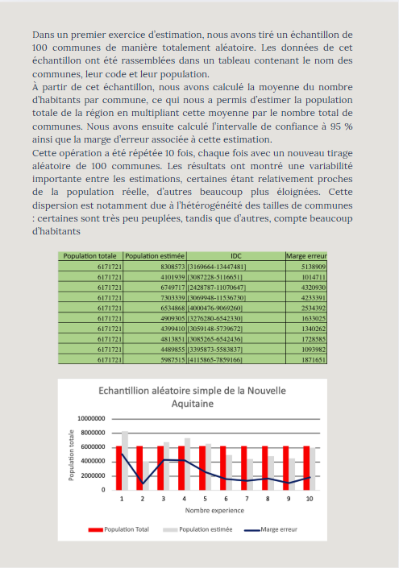

Echantillonnage et estimation
Le but est de réaliser une estimation de la population dans la région de Nouvelle-Aquitaine en s'appuyant sur un échantillon des communes.
Technologies employées : R & Excel
Compétence :
Le but est de réaliser une estimation de la population dans la région de Nouvelle-Aquitaine en s'appuyant sur un échantillon des communes.
Technologies employées : R & Excel
Compétence :